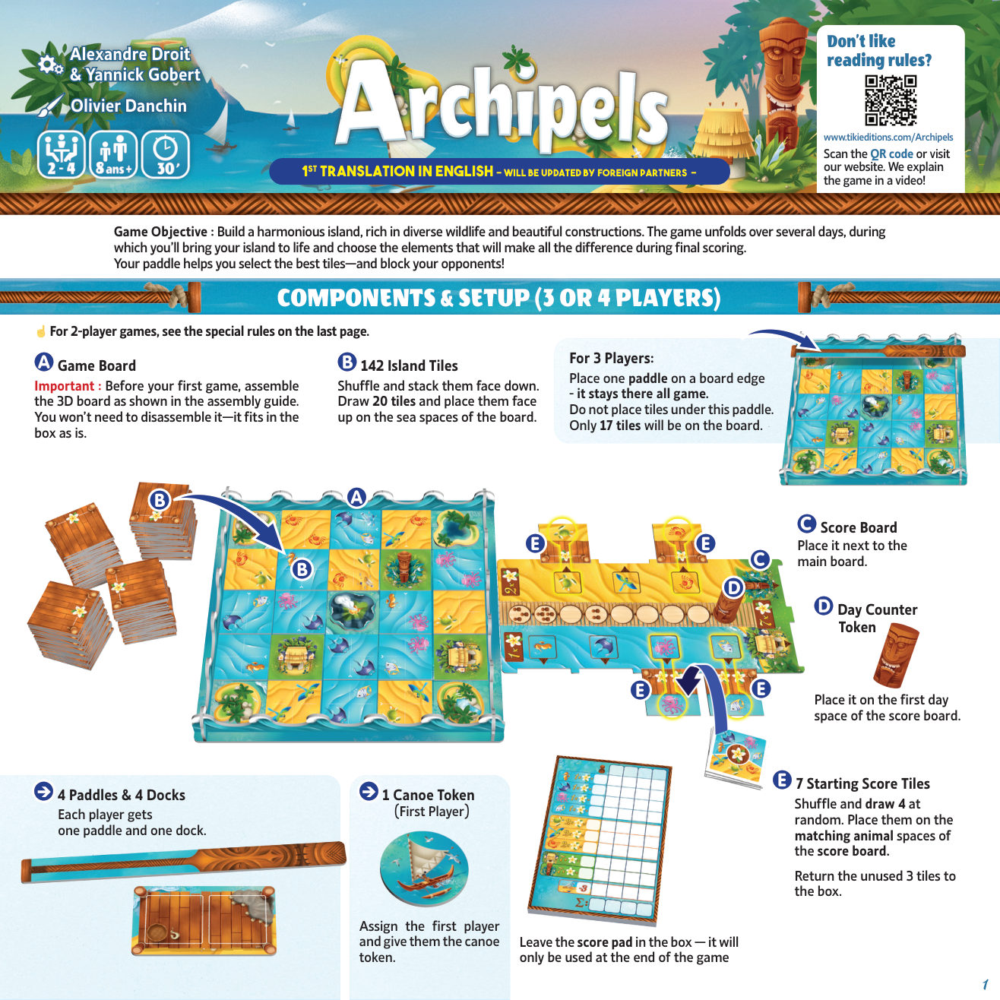
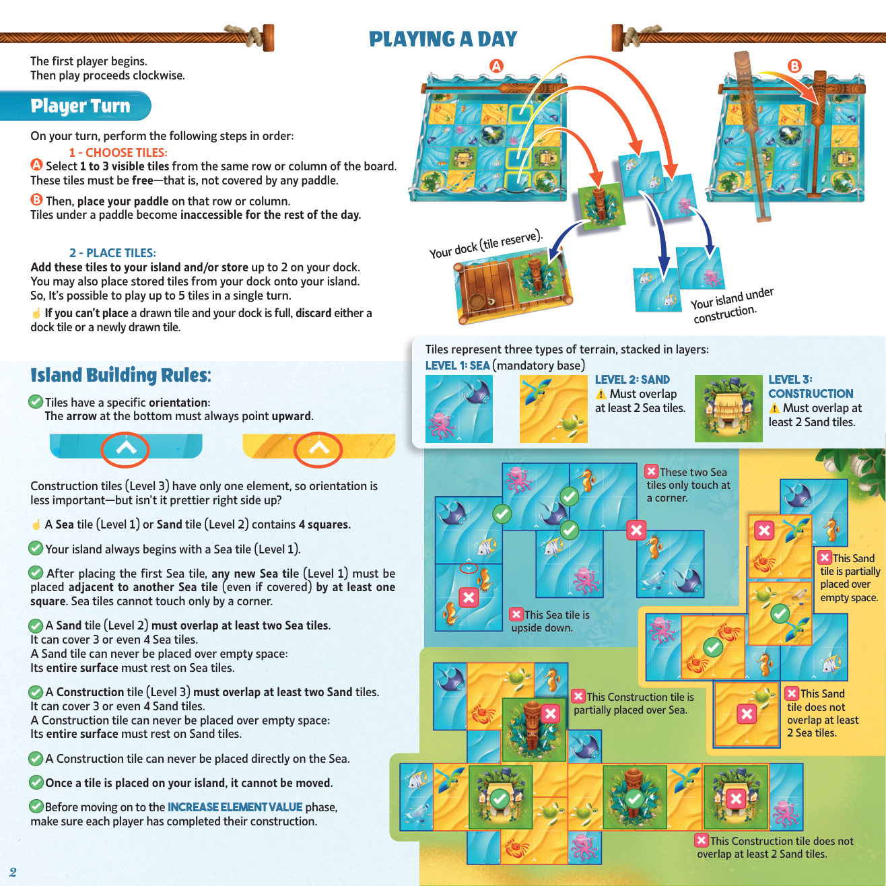
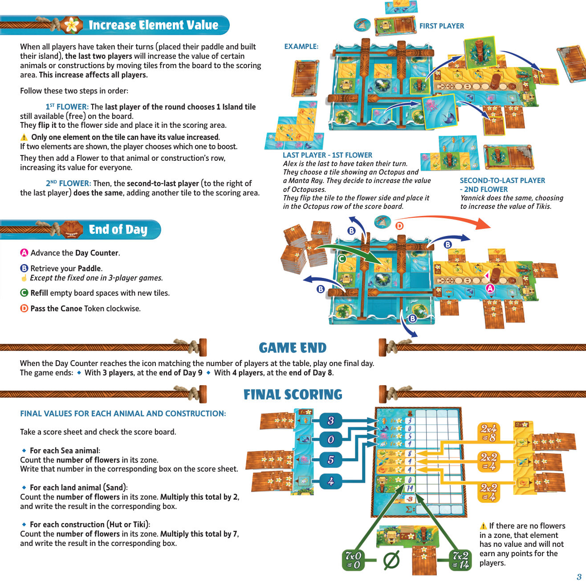
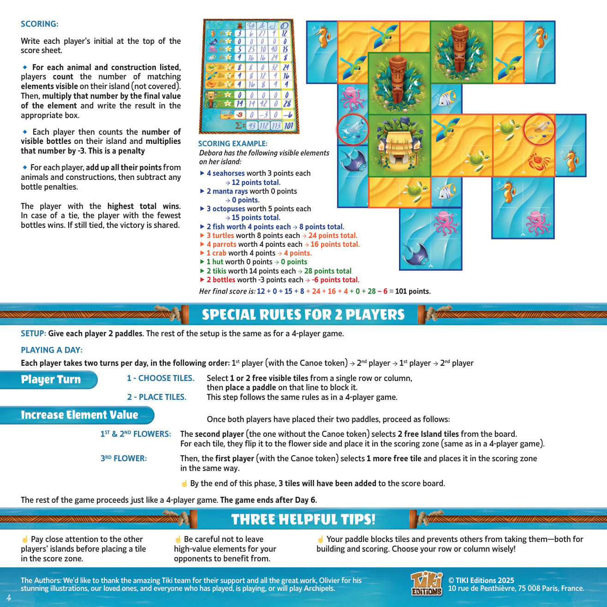

1概览
游戏目标：建造一座和谐的岛屿，让丰富的野生动植物与美丽的建筑在此共生。游戏在数天内展开，你要唤醒自己的岛屿，并选择那些能在最终计分中决定胜负的关键元素。你的桨既能帮你挑到最好的板块——也能堵住对手！
说明：本规则为英文初版翻译，后续将由海外合作方更新。
2组件
主版图，上面有海洋格子，用于抽取并正面朝上摆放岛屿板块。
用来建造岛屿的三层地形板块（海洋 / 沙地 / 建筑）。
记录元素最终价值、花朵与天数；并承载起始计分板块。
放在计分板的天数格上，追踪游戏进程。
准备时随机抽取一部分，为计分区做初始填充。
每位玩家各得 1 支桨（用于封锁行/列）与 1 个船坞（板块储备区）。
标记首位玩家，每天顺时针传递。
仅在游戏结束时用于最终计分。

3准备（3 人与 4 人）
- 版图与船坞。每位玩家各取 1 支桨与 1 个船坞。将船坞放在主版图旁边。
- 岛屿板块。将 142 张板块洗混并正面朝下堆叠。抽取 20 张，正面朝上摆在版图的海洋格上。（3 人局还需在版图某条边缘放 1 支桨，它整局固定不动——不可在其下方摆放板块；此时版上只有 17 张板块。）
- 天数标记。将天数标记放在计分板的第 1 天格上。
- 起始计分板块。洗混 7 张起始计分板块，随机抽取 4 张，摆在计分板对应的动物格上。其余 3 张放回盒中。
- 首位玩家。指定首位玩家，并将独木舟标记交予他。
- 计分纸。将计分纸留在盒中——只在游戏结束时使用。
4进行一天
由首位玩家开始，之后按顺时针进行。轮到你时，依序执行以下步骤：
1 · 选择板块
- 选取。从版图的同一行或同一列中选 1 到 3 张可见板块。这些板块必须是自由的——即未被任何桨覆盖。
- 封锁。随后将你的桨放在该行或该列上。被桨压住的板块在当天剩余时间里都无法再被取用。
2 · 放置板块
- 将这些板块加入你的岛屿，和/或在船坞中最多存放 2 张。你也可以把船坞中已存放的板块放到岛上。
- 因此，单个回合最多可以打出 5 张板块。

5岛屿建造规则
板块代表三种地形，层层堆叠：
- 朝向：板块有固定朝向——底部的箭头必须始终朝上。建筑板块（第 3 层）只有一个元素，朝向不太重要（但正着放更好看）。
- 一张海洋板块（第 1 层）或沙地板块（第 2 层）包含 4 个格子。
- 你的岛屿始终以一张海洋板块（第 1 层）起手。
- 放下第一张海洋板块后，任何新的海洋板块（第 1 层）都必须与另一张海洋板块（即使被覆盖）至少共用一条边相邻，不能仅以角相连。
- 沙地板块（第 2 层）必须覆盖至少 2 张海洋板块。它可以覆盖 3 张甚至 4 张。沙地板块不可悬空放置：其整个表面都必须完全落在海洋板块之上，下方不能有任何空位。
- 建筑板块（第 3 层）必须覆盖至少 2 张沙地板块。它可以覆盖 3 张甚至 4 张。建筑板块不可悬空放置：其整个表面都必须完全落在沙地板块之上，下方不能有任何空位。
- 建筑板块绝不可直接放在海洋上。
- 板块一旦放上岛屿，就不可移动。
- 在进入「提升元素价值」阶段前，请确认每位玩家都已建造完毕。
无效放置
6终日与元素价值
当所有玩家都行动完毕（放下桨并建好自己的岛屿），最后两名玩家要将版图上的若干板块移入计分区，以提升特定动物或建筑的价值。此提升对所有玩家生效。
依序执行以下两步：
第 1 朵花
本轮最后行动的玩家，从版图上选 1 张仍可用（自由）的岛屿板块。将其翻到花朵面，放入计分区。只能提升该板块上某一个元素的价值——若板块上显示两个元素，由该玩家选择提升哪一个。随后他在该动物或建筑的对应行上添加一朵花，为所有人提升其价值。
第 2 朵花
接着，倒数第二名玩家（位于最后一名玩家右侧）做同样的事，再往计分区放入一张板块。
终日
- 推进天数标记。
- 收回你的桨。 （3 人局中固定的那支桨除外。）
- 补充版图上空出的格子，放入新板块。
- 顺时针传递独木舟标记。
各动物与建筑的最终价值
取一张计分纸，对照计分板：
游戏结束
当天数标记到达与桌边人数相对应的图标时，再进行一次最终日。游戏结束于：
- 3 人局 —— 第 9 天结束时。
- 4 人局 —— 第 8 天结束时。
- 最后行动者 —— 第 1 朵花：Alex 是本轮最后行动者。他从版图上选了一张同时显示「章鱼」与「蝠鲼」的岛屿板块，决定提升章鱼的价值。他把这张板块翻到花朵面，放入计分板的章鱼行。
- 倒数第二名 —— 第 2 朵花：Yannick 接着做同样的操作，提升提基像的价值。

7计分
- 在计分纸顶部写下每位玩家姓名的首字母。
- 对清单上列出的每一种动物与建筑，玩家统计自己岛屿上可见的对应元素数量（被覆盖的不计），再乘以该元素的最终价值，将结果写入对应格。
- 每位玩家再统计自己岛屿上可见的瓶子数量，乘以 -3（此为罚分）。
- 每位玩家将动物与建筑的分数全部相加，再扣除瓶子罚分。
总分最高的玩家获胜。
- 若平局，则瓶子最少的玩家获胜。
- 若仍平局，则共享胜利。
计分示例 —— Debora（101 分）
她的最终得分为：12 + 0 + 15 + 8 + 24 + 16 + 4 + 0 + 28 − 6 = 101 分。

8双人特殊规则
准备
每位玩家发 2 支桨。其余准备方式与 4 人局相同。
进行一天
每位玩家每天行动两个回合，顺序如下：首位玩家（持独木舟标记）→ 第二位玩家 → 首位玩家 → 第二位玩家。
- 1 · 选择板块。从单行或单列中选 1 或 2 张自由可见板块，然后将一支桨放在该行/列上以封锁。
- 2 · 放置板块。此步骤与 4 人局规则相同。
花朵（双方各放完两支桨后）
- 第 1 与第 2 朵花：第二位玩家（未持独木舟标记者）从版图上选 2 张自由岛屿板块。每张翻到花朵面，放入计分区（与 4 人局相同）。
- 第 3 朵花：接着，首位玩家（持独木舟标记者）再选 1 张自由板块，以同样方式放入计分区。
其后游戏与 4 人局相同进行。游戏于第 6 天结束。
9三条实用提示
☝ 在计分区放板块前，务必留意其他玩家的岛屿。
☝ 小心别把高价值元素留给你对手去受益。
☝ 你的桨会封锁板块，阻止他人取用——无论用于建造还是计分。慎重选择你要封锁的行或列！
10 · 制作人员
设计：Alexandre Droit & Yannick Gobert
插画：Olivier Danchin
作者致谢：我们要感谢了不起的 Tiki 团队的支持与所有出色的工作，感谢 Olivier 惊艳的插画，感谢我们的挚爱，以及每一位已经、正在或将会游玩 Archipels 的玩家。
版权：© TIKI Editions 2025 —— 10 rue de Penthièvre, 75008 Paris, France.